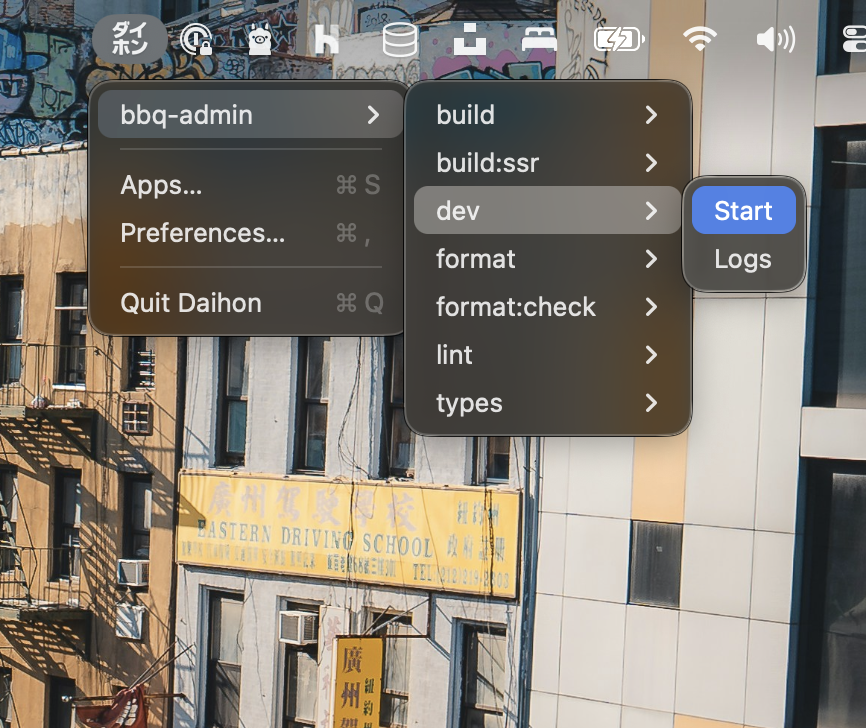

Run npm scripts from your Mac menu bar
Start/Stop scripts in one click. Live tailing logs. Persistent history. zsh environment. Notifications when things finish.
- Menu bar popover lists your projects
- Start/Stop scripts and restart fast
- Live logs with tailing window
- Logs persist across sessions
Features

Menu bar first
See all your projects at a glance and run scripts instantly from the top of your screen.
- Per‑project script lists
- Start / Stop / Restart in one click
- Respects your zsh PATH
Live logs that persist
Open a log window for any running script and tail output in real time—history is kept across sessions.
- Saved per project & script
- Optional notifications when things change
- Quick scroll & clear
How it works
Add your project
Open Preferences and select a folder. Scripts are detected from package.json.
Run a script
Use the menu bar to start and stop scripts. Restart when you need a clean slate.
Watch the logs
Open the Logs window for live output. History persists between sessions.
What you need
- A Mac running macOS 13 or later
- Works on Apple Silicon (M1/M2/M3) and Intel processors
- If your projects use Node, install Node to run their scripts